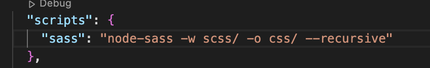

How do CSS Preprocessors work?
By: Nadia Pintos Velasco
CSS (Cascading Style Sheets) is a language that lets you style documents in markup languages like HTML. With different style sheets, the logical structure can produce different presentations. The best practice in web design is to separate the CSS into another stylesheet from your HTML document. CSS is the default language to use with markup languages. However, this language has its restrictions, the most notable one is the lack of variables.
To extend the default capabilities of CSS we need to use scripting languages known as CSS preprocessors. They allow you to use logic in your CSS code, such as variables, nesting, inheritance, mixins, functions and mathematical operations. The first preprocessor created was Sass (Syntactically awesome style sheets). Sass is a language that’s compiled to CSS. You can extend the capabilities of CSS with it and then create a CSS that can be read by the main HTML document.
To be able to do this, the program needs to know that you want to translate from the preprocessor to a CSS file. You can indicate this action through a command or by running a script that tells the program that a conversion is needed. For example, here:
Our Sass script will look for all the files in our scss folder (where we are collecting our Sass files) and will output a folder that will keep our CSS files. Once the script is running, every time we make a change and save it it will be translated to CSS languages and we’ll be able to work in our Sass file with all the extended capabilities of CSS without worrying about translating it. This is possible because of compilers.
A compiler is running behind the scenes and making this translation between two languages possible. A compiler turns the high-level source code that humans write into machine code so the computer knows the instructions it needs to follow. However, the logic behind preprocessors is different. They don’t transform the language we’re working with into a new one. Preprocessors only take in the language we’re working with and transform it to output the same language.
For example, with Sass, we’re still using CSS but it’s an extended version. Which is why when we’re done and save our code a program is running behind the scenes spotting the differences between the extended code (Sass files) and the expected output (CSS). Meanwhile the differences are being spotted, the program writes a new file with the expected output language, in this case CSS.
CSS preprocessors will look for all these differences, be it nesting, variables, etc., and adjust the syntaxis of the code to only CSS language. From here, we’ll have a CSS file that can be read without issue from an HTML document. The advantage is that because we’re coding with the Sass language or any other preprocessor, we can implement logic that we would have been restricted from using with only CSS. This way is also easier for the programmer to write code, without worrying about translating into another language, the preprocessors does it automatically.